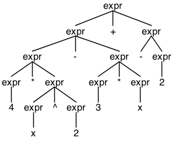

The grammar of mathematical expressions
Using computers to do automatic translation has a long and rich history in computer science. A course in compiler construction is a veritable survey of topics in computer science running the gamut from formal languages to data structures and algorithms to Hopfcroft’s algorithm to minimize deterministic automata. One of the first things a student learns in a compiler construction course is how to formally describe the grammar of a language using (extended) Backus–Naur form (EBNF). This article will assume a passing familiarity with EBNF notation.
A simple grammar for math expressions.
An exercise every compiler construction student is given is to construct a grammar for simple mathematical expressions. This exercise is particularly easy with ANTLR 4, a lexer and parser generator that can accept grammars than many other compiler tools would reject. Here is an ANTLR 4 grammar for simple math expressions.
expr
: INT //numbers
| ID //variables
| '(' expr ')' //grouping with parentheses
| <assoc=right> expr '^' expr //exponentiation
| ('+' | '-') expr //unary plus/minus
| expr ('/' | '*') expr //explicit division/multiplication
| expr ('+' | '-') expr //addition/subtraction
;For the input 4*x^2 - 3*x + -2 this grammar gives the following parse tree.

ANTLR conveniently handles the order of operations for us by giving precedence to the production alternative that comes first: the earlier the alternative, the higher the precedence of the operator. Also, the right associativity of exponentiation is taken care of by the directive <assoc=right>. Piece of cake. And it’s easy to expand this grammar to include other operators, like the postfix factorial (!) for example.
The grammatical challenge of implicit multiplication
Mathematicians don’t like to write an explicit symbol for multiplication unless we’re compelled to. We prefer to write 4x^2 - 3x + -2 instead of 4*x^2 - 3*x + -2. We might naively modify our grammar as follows.
expr
: INT //numbers
| ID //variables
| '(' expr ')' //grouping with parentheses
| <assoc=right> expr '^' expr //exponentiation
| ('+' | '-') expr //unary plus/minus
| expr '/' expr //division
| expr '*'? expr //explicit multiplication
| expr ('+' | '-') expr //addition/subtraction
;The ? after the * indicates that the * symbol is optional–it can be omitted. But this doesn’t work as expected! This grammar parses 7 + 3 as 7*(+3), which is not what we want. Splitting implicit multiplication off as a seperate alternative appears to solve this problem.
expr
: INT //numbers
| ID //variables
| '(' expr ')' //grouping with parentheses
| <assoc=right> expr '^' expr //exponentiation
| ('+' | '-') expr //unary plus/minus
| expr '/' expr //division
| expr '*' expr //explicit multiplication
| expr expr //implicit multiplication
| expr ('+' | '-') expr //addition/subtraction
;But now we have a new problem: implicit multiplication does not respect order of operations. This grammar generates the following parse tree for the input 4x+3.
What’s going on? Precedence only applies to tokens, e.g. operator symbols, and our implicit multiplication alternative has no operator. (This wrong solution is common. You’ll see people on the web wondering why adding implicit multiplication doesn’t respect operator precedence.)
The solution
But we can enforce order of operations by having a hierarchy of production rules like the following general pattern [1].
type_variable: ...
type_primary: type_variable
| ...
type_secondary: type_primary
| ...
type_tertiary: type_secondary
| ...
type_expression: type_tertiary
| ...So instead of relying on ANTLR to determine precedence according to the order of each alternative, we bake it into the grammar itself. We might rewrite our math expression grammar as follows [2].
term
: INT
| ID
| '(' expr ')' //parentheses
;
//Implicit multiplication
factor
: term
| <assoc=right> term '^' factor
| term factor
;
//Unary minus/plus
prefix
: factor
| ('+' | '-') prefix //unary plus/minus
;
//Explicit multiplication/division
multdiv
: prefix
| multdiv '/' prefix //division
| multdiv '*' prefix //explicit multiplication
;
expr
: multdiv
| expr ('+' | '-') multdiv //addition/subtraction
;Notice I awkwardly included exponentiation in the factor production relying on ANTLR to implicitly determine its precedence over implicit multiplication. This suggests that the above grammar is overcomplicated, that is, we can collapse much of this hierarchy and let ANTLR do some of the work. Here is our final grammar.
term
: LEAF
| '(' expr ')' //parentheses
;
//Implicit multiplication
factor
: term
| <assoc=right> term '^' factor
| term factor
;
//Unary minus/plus
expr
: factor
| ('+' | '-') expr //unary plus/minus
| expr '/' expr //division
| expr '*' expr //explicit multiplication
| expr ('+' | '-') expr //addition/subtraction
;And the parse tree for 4x^2 - 3x + -2.
Success!
Conclusion
You can see that there is a reason most languages–even computer algebra systems–require an explicit multiplication symbol. Requiring a * is a small price to pay for a simpler language grammar.
This is a great example of how tweaking a very simple problem can sometimes produce a very challenging problem. As a math teacher I really like this example, because there is so much opportunity to teach. We review the concept of order of operations and how order of operations works in mathematics, and we learn about a strategy for dealing with order of operations in formal grammars. All of this is done from a very applied, very real-world problem that the students can value.
But the punchline shouldn’t be that writing a formal grammar for a math expression parser is hard. Rather, writing grammars in general is hard, language itself is hard. This challenge came up in the context of math expressions, but it could just as easily come up in the context of parsing any language. John Levine [3] calls writing a grammar with error recovery a “black art,” Cooper and Torczon [4] call compiler construction an “art and science,” Michael L. Scott [5] refers to the “art” of language design and cites Donald Knuth [6] as suggesting programming can be regarded as the “art of telling another human being what one wants the computer to do.” I like to think that what these heavyweights are telling us is that we should embrace the difficulty as something beautiful.
Notes
[1]: This standard pattern is described by Laurence Finston at http://lists.gnu.org/archive/html/help-bison/2005-08/msg00004.html.
[2]: This implementation of the general pattern is essentially stackoverflow user rici’s, http://stackoverflow.com/questions/12875573/how-can-i-have-an-implicit-multiplication-rule-with-bison.
[3]: John Levine, flex and bison, O’Reilly, 2009.
[4]: Keith D. Cooper and Linda Torczon, Engineering a Compiler, second edition, Morgan Kaufmann, 2012.
[5]: Michael L. Scott, Programming Language Pragmatics, third edition, Morgan Kaufmann, 2009.
[6]: Donald Knuth, “Literate programming,” The Computer Journal, 27(2):97-111, May 1984.